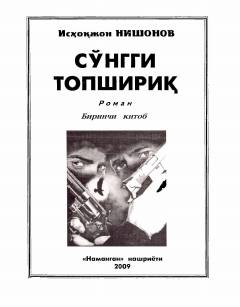

ASAfgʻonistondagi urush va maxsus topshiriqlar haqidagi detektiv roman.
Ushbu asar yozuvchi Isxoqjon Nishonovning «Afgʻon shamoli» turkumiga kiruvchi romanlaridan biridir. Kitobda ogʻir jinoyatlarni sodir etib, xorijda yashirinib yurgan va Vatan tinchligiga tahdid solayotgan guruhlarning qilmishlari hamda ularga qarshi kurashuvchi insonlarning jasorati tasvirlanadi.